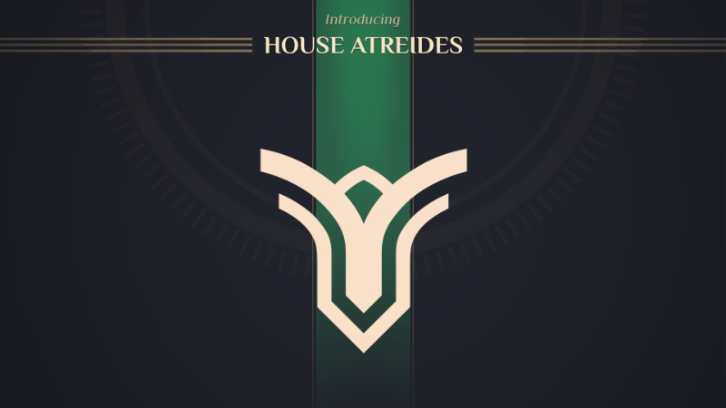
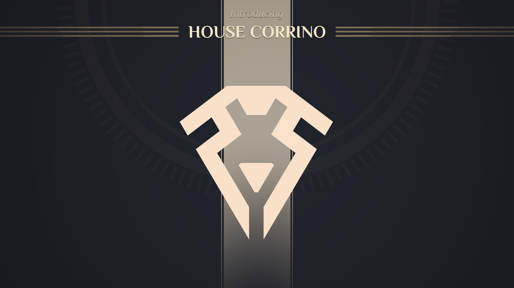

House Atreides
The stellar reputation of House Atreides owes a lot to its leader’s commanding style: firm yet honorable and fair. By imperial decree, the Atreides have just inherited the stewardship of Arrakis and have a lot of work to do to take over from the Harkonnens.

House Harkonnen
House Harkonnen shares its chilling reputation with its leader, Baron Vladimir Harkonnen. They have been called despotic, merciless, scheming and devious. And those are only their finer qualities.

Smugglers
There’s a fine line between smugglers and full-fledged bandits, and Esmar Tuek is adept at walking that line. Smugglers can provide anything to anyone, provided they put the price… and do not look at the specifics too closely.

House Corrino
Imperial House Corrino has ruled the galaxy for ten millenia, and Shaddam IV intends to keep it that way. The situation on Arrakis calls for the direct intervention of the Padishah Emperor, who will use all His wit and the might of His administration to turn the war to His benefit.